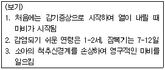

제과기능사 (2005-10-02 기출문제)
1과목: 제조이론
1. 유지와 밀가루를 먼저 넣고 반죽하는 케이크 제조방법은?
- 블렌딩법
- 크림법
- 시럽법
- 1단계법
(정답률: 87%)

2. 케이크 도넛을 제조할 때 설탕을 정상보다 많이 사용하면 나타나는 결과는?
- 기름 흡수가 적다.
- 껍질이 부드럽다.
- 기공이 열린다.
- 조직이 거칠다.
(정답률: 46%)
3. 파이 반죽을 냉장고에 넣어 휴지를 시키는 이유가 아닌 것은?
- 밀가루의 수분을 흡수한다.
- 유지를 적정하게 굳힌다.
- 퍼짐성을 좋게 한다.
- 끈적거림을 방지한다.
(정답률: 52%)
4. 다음 반죽 중 튀김용 반죽으로 적당한 것은?
- 퍼프페이스트리 반죽
- 스펀지케이크 반죽
- 슈 반죽
- 쇼트브레드 쿠키 반죽
(정답률: 71%)
5. 정형한 파이 반죽에 구멍자국을 내주는 가장 주된 이유는?
- 제품을 부드럽게 하기 위해
- 제품의 수축을 막기 위해
- 제품의 원활한 팽창을 위해
- 제품에 기포나 수포가 생기는 것을 막기 위해
(정답률: 82%)
6. 제과, 제빵, 아이스크림 등에 널리 사용되는 바닐라에 대한 설명 중 맞지 않는 것은?
- 바닐라 향은 조화된 향미를 가지므로 식품의 기본 향으로 널리 이용된다.
- 바닐라는 열대지방 원산지로 바닐라 빈을 발효 건조시킨 것이다.
- 바닐라 에센스는 수용성 제품에 사용한다.
- 바닐라는 안정제의 역할을 한다.
(정답률: 78%)
7. 엔젤푸드케이크 제조시 불필요한 재료는?
- 주석산크림
- 중조
- . 설탕
- 소금
(정답률: 62%)
8. 생산 공장시설의 효율적 배치에 대한 설명 중 적합하지 않은 것은?
- 작업용 바닥면적은 그 장소를 이용하는 사람들의 수에 따라 달라진다.
- 판매장소와 공장의 면적배분(판매3:공장1)의 비율로 구성되는 것이 바람직하다.
- 공장의 소요면적은 주방설비의 설치면적과 기술자의 작업을 위한 공간면적으로 이루어진다.
- 공장의 모든 업무가 효과적으로 진행되기 위한 기본은 주방의 위치와 규모에 대한 설계이다.
(정답률: 70%)
9. 아이싱에 이용되는 퐁당(fondant)은 설탕의 어떤 성질을 이용하는가?
- 설탕의 보습성
- 설탕의 재결정성
- 설탕의 용해성
- 설탕이 전화당으로 변하는 성질
(정답률: 70%)
10. 팬닝시 주의점이 아닌 것은?
- 종이 깔개를 사용한다.
- 철판에 넣은 반죽은 두께가 일정하게 펴준다.
- 팬기름은 많이 바른다.
- 팬닝 후 즉시 굽는다.
(정답률: 88%)
11. 쿠키의 크기를 크게 하기 위한 조치는?
- 팽창제를 적게 사용한다.
- 설탕 대신 분당을 사용한다.
- 산성재료의 사용량을 늘린다.
- 오븐 온도를 낮춘다.
(정답률: 50%)
12. 마카롱 쿠키는 주로 아몬드를 사용하는 쿠키로 밀가루를 사용하지 않는 경우도 있다. 이 쿠키는 다음의 어느 쿠키에 속하는가?
- 드롭 쿠키
- 스냅 쿠키
- 스펀지 쿠키
- 머랭 쿠키
(정답률: 76%)
13. 스펀지케이크 제조시 비중을 가장 낮게 하는 재료는?
- 유지
- 설탕
- 계란
- 소금
(정답률: 51%)
14. 다음 제품 중 반죽의 분류상 다른 셋과 구별되는 것은?
- 레이어케이크
- 파운드케이크
- 스펀지케이크
- 과일케이크
(정답률: 61%)
15. 고율배합에 대한 설명으로 틀린 것은?
- 젤리롤케이크
- 과일케이크
- 퍼프페이스트리
- 버터스펀지케이크
(정답률: 60%)
16. 굽기 과정 중 일어나는 마이야르 반응(mailiard reaction)은 첨가되는 당의 종류에 따라서 갈색화 속도가 달라진다. 같은 조건의 반죽에 각각 설탕, 포도당, 과당을 같은 농도로 첨가했다고 가정할 때 마이야르 반응속도를 촉진시키는 순서로 나열된 것은?
- 설탕-포도당-과당
- 과당-설탕-포도당
- 과당-포도당-설탕
- 포도당-과당-설탕
(정답률: 56%)
17. 스트레이트법으로 일반 식빵을 만들 때 믹싱 후 반죽의 온도로 가장 이상적인 것은?
- 20℃
- 27℃
- 34℃
- 41℃
(정답률: 82%)
18. 냉동 반죽법에서 믹싱 후 1차 발효시간으로 가장 올바른 것은?
- 0-20분
- 50-60분
- 80-90분
- 110-120분
(정답률: 51%)
19. 팬에 바르는 기름은 다음 중 무엇이 높은 것을 선택해야 하는가?
- 산가
- 크림성
- 가소성
- 해발연점
(정답률: 64%)
20. 제빵시 적량보다 많은 분유를 사용했을 때의 결과 중 잘못된 것은?
- 양옆면과 바닥이 움푹 들어가는 현상이 생김
- 껍질색은 캐러맬화에 의하여 검어짐
- 모서리가 예리하고 터지거나 슈레드가 적음
- 세포벽이 두꺼우므로 황갈색을 나타냄
(정답률: 54%)
2과목: 재료과학
21. 빵 발효에서 다른 조건이 같을 때 발효 손실에 대한 설명 중 틀린 것은?
- 반죽 온도가 낮을수록 발효 손실이 크다.
- 발효 시간이 길수록 발효 손실이 크다.
- 소금, 설탕 사용량이 많을수록 발효 손실이 적다.
- 발효실 온도가 높을수록 발효 손실이 크다.
(정답률: 47%)
22. 다음 반죽의 상태 중 밀가루의 글루텐이 형성되어 최대의 탄력성을 갖는 단계는?
- 픽업단계
- 클린업단계
- 발전단계
- 렛다운단계
(정답률: 68%)
23. 각 재료에 대한 설명 중 틀린 것은?
- 밀가루는 체질하여 공기를 혼입시킨다.
- 설탕이 과다하면 발효에 방해가 된다.
- 계란 껍질에 광택이 있는 것이 신선할 것이다.
- 유당은 껍질색에 영향을 미친다.
(정답률: 82%)
24. 효과적인 원가관리를 위한 3단계 협조체계가 아닌 것은?
- 생산 부서의 절약
- 구매부의 원가절감
- 소비자의 구매유도
- 판매원의 원가절감
(정답률: 69%)
25. 식빵은 보통 내부 온도가 35~40℃정도 될 때까지 냉각시킨다. 식빵의 온도를 28℃까지 냉각한 후 포장하였다고 가정할 때 식빵에 미치는 영향으로 올바른 것은?
- 노화가 일어나서 빨리 딱딱해진다.
- 빵에 곰팡이가 쉽게 발생한다.
- 빵의 모양이 찌그러지기 쉽다.
- 식빵을 슬라이스하기 어렵다.
(정답률: 79%)
26. 수평형 믹서를 청소하는 방법으로 올바르지 않은 것은?
- 청소하기 전에 전원을 차단한다.
- 생산 직후 청소를 실시한다.
- 물을 가득 채워 회전시킨다.
- 금속으로 된 스크레이퍼를 이용하여 반죽을 긁어낸다.
(정답률: 82%)
27. 성형시 둥글리기의 목적이 될 수 없는 것은?
- 표피를 형성시킨다.
- 가스포집을 돕는다.
- 끈적거림을 제거한다.
- 껍질색을 좋게 한다.
(정답률: 73%)
28. 스펀지법으로 제빵할 때 스펀지의 밀가루 변화를 시키는 경우의 설명으로 부적당한 것은?
- 부피, 향, 저장성 등 품질을 개선시키고자 할 때
- 발효 시간을 변경할 필요가 있을 때
- 기계 및 설비를 감소시킬 때
- 밀가루의 품질이 변경되었을 때
(정답률: 70%)
29. 미국식 데니시 페이스트리 제조시 반죽무게에 대한 충전용 유지(롤인유지)의 사용범위로 가장 적당한 것은?
- 10-15%
- 20-40%
- 45-60%
- 60-80%
(정답률: 62%)
30. 2차 발효실의 온도범위로 가장 적합한 것은?
- 20-26℃
- 32-43℃
- 45-55℃
- 56-67℃
(정답률: 68%)
3과목: 영양학
31. 우유 단백질의 응고에 관여하지 않는 것은?
- 산
- 레닌
- 가열
- 리파아제
(정답률: 63%)
32. 다음 중 산성물질이 아닌 것은?
- 소다
- 주석산크림
- 전화당
- 레몬쥬스
(정답률: 44%)
33. 과자와 빵에서 우유가 미치는 영향 중 틀린 것은?
- 영양을 강화시킨다.
- 보수력이 없어서 쉽게 노화된다.
- 겉껍질 색깔을 강하게 한다.
- 이스트에 의해 생성된 향을 착향시킨다.
(정답률: 67%)
34. 밀가루 중 글루텐은 건조 중량의 약 몇배에 해당하는 물을 흡수할 수 있는가?
- 1배
- 3배
- 5배
- 7배
(정답률: 68%)
35. 쌀의 83%를 차지하며 밀가루 구성의 주 부위는?
- 내배유
- 배아
- 껍질 부위
- 세포
(정답률: 84%)
36. 다음 중 감미도가 가장 높은 당은?
- 유당(Lactose)
- 포도당(Glucose)
- 설탕(Socrose)
- 과당(Fructose)
(정답률: 86%)
37. 유지의 기능이 아닌 것은?
- 감미제
- 안정화
- 가소성
- 유화성
(정답률: 58%)
38. 산화제를 사용하면 두 개의 -SH기가 S-S결합으로 바뀌게된다. 이같은 반응이 일어나는 것은 어느 것에 의한 것인가?
- 밀가루의 단백질
- 밀가루의 전분
- 고구마 전분
- 감자 전분
(정답률: 62%)
39. 다음 중 일반 식염의 구성 원소는?
- 나트륨, 염소
- 칼슘, 탄소
- 마그네슘, 염소
- 칼륨, 탄소
(정답률: 67%)
40. 빵 제조시 연수를 사용할 때의 적절한 조치는?
- 끓여서 여과
- 이스트량 증가
- 미네랄 이스트 푸드 사용 증가
- 소금량 감소
(정답률: 56%)
41. 제빵시 소금사용량이 적량보다 많으면 나타나는 현상이 아닌 것은?
- 부피가 적다.
- 세포벽이 얇다.
- 껍질색이 검다.
- 발효 손실이 적다.
(정답률: 40%)
42. 도넛의 광택제(glaze) 코팅이 부스러지는 것을 방지하기 위하여 사용하는 안정제와 거리가 먼 것은?
- 스테아린
- 한천
- 펙틴
- 젤라틴
(정답률: 57%)
43. 다당류인 전분을 분해하는 효소가 아닌 것은?
- 알파 아밀라아제
- 베타 아밀라아제
- 디아스타제
- 말타아제
(정답률: 47%)
44. 밀가루에 함유된 회분이 의미하는 것이 아닌 것은?
- 무기질은 껍질에 많다.
- 정제 정도를 알 수 있다.
- 제분율이 같을 경우 강력분은 박력분보다 회분함량이 높다.
- 제빵 특성을 대변한다.
(정답률: 52%)
45. 밀가루 전분의 아밀로펙틴 구조에 대한 설명 중 잘못된 것은?
- 요오드 용액에 의하여 청색반응이 일어난다.
- 아밀로오스에 비하여 분자량이 크다.
- 전분의 구조가 측쇄(가지형)로 연결되어 있다.
- 일반 국물에서 아밀로오스보다 구성비가 높다.
(정답률: 60%)
46. 밀가루 음식에 대두를 넣는다면 어떤 영양소가 강화되는 것인가?
- 섬유질
- 지방
- 필수아미노산
- 무기질
(정답률: 56%)
47. 리놀렌산(linolenic acid)의 급원식품은?
- 라드
- 들기름
- 면실유
- 해바라기씨유
(정답률: 57%)
48. 유용한 장내세균의 발육을 도와 정장작용을 하는 이당류는?
- 설탕
- 유당
- 맥아당
- 셀로비오스
(정답률: 68%)
49. 지방이 가수분해 되어 생성되는 물질이 아닌 것은?
- 아미노산
- 글리세린
- 지방산
- 모노글리세라이드
(정답률: 58%)
50. 괴혈병을 예방하기 위하여 어떤 영양소가 많은 식품을 섭취해야 하는가?
- 비타민 A
- 비타민 C
- 비타민 D
- 비타민 B1
(정답률: 72%)
4과목: 식품위생학
51. 다음 첨가물 중 합성보존료가 아닌 것은?
- 데히드로 초산
- 소르빈산
- 치아염소산 나트륨
- 프로피온산 나트륨
(정답률: 41%)
52. 독소형 식중독에 속하는 것은?
- 포도상구균
- 장염비브리오균
- 병원성대장균
- 살모넬라균
(정답률: 66%)
53. 세균, 곰팡이, 효모, 바이러스의 일반적 성질에 대한 설명 중 옳은 것은?
- 세균은 주로 출아법으로 그 수를 늘리며 술제조에 많이 사용한다.
- 효모는 주로 분열법으로 그 수를 늘리며 식품 부패에 가장 많이 관여하는 미생물이다.
- 곰팡이는 주로 포자에 의하여 그 수를 늘리며 빵, 밥 등의 부패에 많이 관여하는 미생물이다.
- 바이러스는 주로 출아법으로 그 수를 늘리며 효모와 유사하게 식품의 부패에 관여하는 미생물이다.
(정답률: 74%)
54. 식품첨가물의 규격과 사용기준은 누가 지정하는가?
- 식품의약품안전청장
- 국립보건원장
- 시,도 보건연구소장
- 시,군 보건소장
(정답률: 91%)
55. 생유의 미생물 오염에 대한 변화를 설명한 것 중 잘못된 것은?
- 대장균군의 오염이 있으면 거품을 일으키며 이상응고를 나타낸다.
- 단백분해균 중 일부는 우유를 점질화시키거나 쓴맛을 주는 것도 있다.
- 생유 중의 산생성균은 산도상승의 원인이 되어 선도를 저하시키기도 한다.
- 냉장 중에는 우유에 변패를 일으키는 미생물이 증식하지 못한다.
(정답률: 72%)
56. 다음 보기에서 설명하는 전염병의 가장 적절한 예방방법은?

- 예방접종
- 항생제 투여
- 음식물의 오염방지
- 쥐, 진드기, 바퀴벌레 박멸
(정답률: 75%)
57. 식중독 발생시의 조치사항 중 잘못된 것은?
- 환자의 상태를 메모한다.
- 보건소에 신고한다.
- 식중독 의심이 있는 환자는 의사의 진단을 받게 한다.
- 먹던 음식물은 전부 버린다.
(정답률: 78%)
58. 유해한 합성 착색료는?
- 수용성 안나트
- 베타 카로틴
- 이산화티타늄
- 아우라민
(정답률: 52%)
59. 인축공통 전염병으로만 짝지어진 것은?
- 콜레라, 장티푸스
- 탄저, 리스테리아증
- 결핵, 유행성 간염
- 홍역, 브루셀라증
(정답률: 67%)
60. 어패류의 생식과 관계 깊은 식중독 세균은?
- 프르테우스균
- 장염 비브리오균
- 살모넬라균
- 바실러스균
(정답률: 80%)